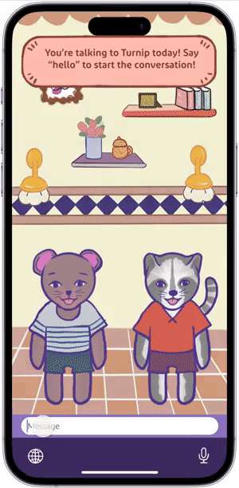
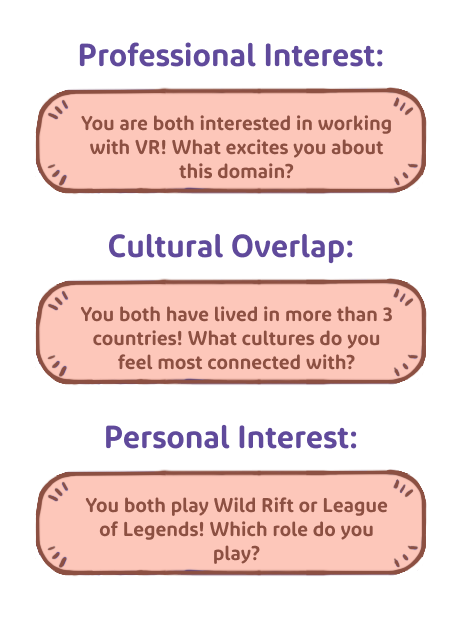
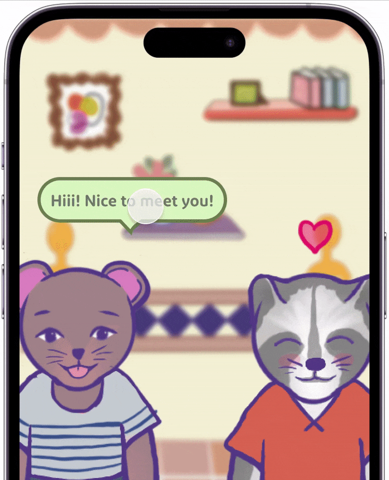

CoHeart
A chat app that helps introverted international graduate students establish friendships within their program cohort, during their initial acclimation to the US
Target Users: Introverted International Graduate Students (IIGS) who have recently begun their processes of transition to their Masters and/or Ph.D. program. Special focus was given to IIGS who had never previously lived in the United States for a significant amount of time.
Problem Space: IIGS have a limited or non-existent support network before their arrival in the U.S. and face unique barriers in establishing a new social support system in their new location.
Goal: Generate an intervention that guides IIGS through the initial steps of establishing connections - gently steering them to step outside of their comfort zones and build their confidence throughout the process.

Research
Areas of Focus
- How IIGS behave across a range of social contexts, with special attention paid to the size of the context, its primary function, and the nature of its organization – whether programmed or casual.
- How IIGS establish their social circle, with special attention paid to the qualities of the environments into which they choose to invest their time & energy.
- How IIGS successfully or unsuccessfully establish friendship within these new cultural contexts and how they evaluate and make value judgments around friendships they deem as important.
Methods: The research methods for this project included event observations, online surveys, and one-on-one interviews with IIGS and International student organizations’ staff. Survey data was visualized through Tableau and analyzed. IIGS interviews and organization interviews were transcribed and then analyzed using qualitative coding.


Research Findings
IIGS connect best along the lines of:
Shared Interests
Interviews and surveys reveal that IIGS prioritize shared interests in potential friendships, despite concerns about niche interests leading to a "Sense of Otherness." This indicates a desire for connections based on common hobbies, with an emphasis on comfort and minimizing the risk of rejection.
Shared Cultural Lived Experience
Survey data and interviews reveal that IIGS prioritize finding friends with similar cultural backgrounds, emphasizing that a general cultural connection is not enough for IIGS to feel culturally connected/represented. Rather, IIGS desire to find others with the same cultural lived experience.
IIGS best connect with others when:
Social Life is Aligned with Grad School
Participants expressed a preference for integrating social interactions with academic activities, as indicated by the desire for group projects to facilitate socializing around shared topics. Surveys showed that IIGS found engaging through program events or coursework to be effective for meeting peers, with time constraints cited as a major barrier to forming friendships.
Connecting in Comfort Zone
The finding that merely meeting people doesn't guarantee friendship underscores the importance of comfort in forming meaningful connections, a point emphasized by both our surveys and interviews. This insight, which challenges previous assumptions and literature, prompted a pivotal shift in our project's focus towards prioritizing comfort as essential for success in fostering friendships.
Sketched Concepts
Buddy System

The Buddy System pairs incoming international students (IIGS) with two types of buddies—a former IIGS for cultural guidance and a local student for academic and cultural guidance—based on personality and preference surveys. This service facilitates IIGS' transition to the U.S. by offering organized meet-ups, an orientation checklist, and study sessions, utilizing an integrated system for course and calendar information.
Cohort Facilitation

Cohort Facilitation enhances networking and friendship for international students (IIGS) by using surveys on their backgrounds, interests, and goals to inform program directors. This process includes anonymous, prompt-based conversations and a compatibility survey, enabling tailored group activities and events that align with the diverse profiles of each cohort.
Wireframe
Taking in the feedback on our concept sketches, we created the wireframe for CoHeart, a buddy-matching platform that uses students’ survey input to match students up for a series of anonymous prompt-driven chats, helping individuals find friends within a cohort, before the semester begins.


User Feedback on Wireframe
Avatars — Using avatars to anonymously represent oneself is very useful to Anxious and Culture Introverts. "I like to meet [people] online with a character because it makes me feel more comfortable"
Personality Quiz — IIGS are willing to invest more time on a quiz if the results help them connect with their cohort. Otherwise, they only want to spend about 5 minutes.
Meet-and-Greet Session — Anxious and Culture Introverts sometimes find text chat more comfortable than voice chat. IIGS vary greatly in the time needed for them to form an opinion of another person, and don't like the pressure of a visible timer.
Liking and Matching System — Most IIGS want a non-judgmental matching system. Some IIGS in small graduate school programs find the feature unnecessary.
Prototype Design
Focus: Meet-and-Greet Tutorial and Session
Based on user feedback on the wireframe, we built out a prototype for the Meet-and-Greet session, as well as any components needed to support this user flow, including a new tutorial, conversation prompts, and improvements to avatars.



Meet-and-Greet Tutorial
Users then participate in scheduled virtual Meet-and-Greet sessions, where students are paired up, one-on-one, according to their quiz responses. Before starting, users complete a Meet-and-Greet tutorial, in which the program director's avatar walks users through the primary interactions for the Meet-and-Greet.

Meet-and-Greet Session
During Meet-and-Greet sessions, users are periodically given prompts that relate to their shared overlaps in professional goals, lived experiences, and interests, in order to spark conversation. Users can express emotion by 'reacting' to messages with emoticons such as hearts, smiley faces, or frowny faces (the latter of which are not visible to the other participant). Throughout the session, the user will meet with a handful of other participants.
Expert Evaluation & User Testing

“Paper” Prototype — The prototype was built using Procreate, Figma, and FigJam, with screen designs aligned with tasks like tutorials and Meet-And-Greet events. Interaction and communication were simulated through FigJam's text chat and audio playback, while a script ensured consistent data collection and guided experts during testing.
Expert Evaluation: Cognitive Walkthrough — To understand how first-time users would approach the interface, and identify any usability or accessibility gaps in the system, we asked experts to perform a cognitive walkthrough of the Meet-and-Greet Tutorial and a Meet-and-Greet session.
User Testing: Wizard of Oz Usability Tests — To evaluate CoHeart's effectiveness in enhancing participants' comfort during first-time meetings, we conducted 6 usability tests with six IIGS, performing three tasks: (1) Select an Avatar, (2) Tutorial for Meet-and-Greet, (3) Meet-and-Greet Simulation.
Testing was conducted in-person, with separate rooms for participants and the role-playing team member, connected via Zoom. The process began with an introduction and consent, followed by the tasks and ended with semi-structured interviews to gather feedback on the experience.
Final Findings
Next Explorations
Accessibility — The interface will need to be optimized for screen readers. Alt text should be provided for the avatar's description.
Messages — Users cannot see message history. "If multiple messages are sent, you might miss something."
Prompts — Users desire control over prompt timing. "When the prompt comes in the middle of a conversation, it makes it feel rushed."

Successes

Comfy Style — The casual and cute style made IIGS feel comfortable with informal rapid English and connect more readily. "It's very cute. Everything is not very refined, it's a childish/casual feeling. I don't feel like I have to be precise or careful with my wording."
Prompts — Prompts are very helpful in making conversation more comfortable. "I feel like the prompt definitely helps people like me. Sometimes I don't know what to talk about. This experience felt really good."
Reactions — Reactions offer a familiar communication type that is comfortable for IIGS. "As an international student, sometimes I don't know the best way to react. My language can sound a little formal. Texting acronyms are not in my language, but emojis are the same everywhere, so I like using them."
Reflection
Research Over Assumptions — Our "Stay in Your Comfort Zone" finding came as a surprise, as we had initially assumed that IIGS would need to get out of their comfort zone in order to make friends. Realizing that the research contradicted with assumptions on our part was an instrumental moment in this project.
Style for Comfort — Creating components for this paper (FigJam) prototype was one of my favorite parts of the project, and I think it is reflected in the playful style of the illustrations. While the 'cuteness' of the style was intentional, users' positive responses to its sketchy style were unexpected. Transferring the casual, crafted nature of analog sketching - and the richness of hand-drawn drawings - to vector graphics is an interesting challenge that I wish to explore further.